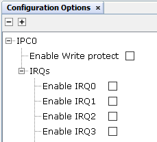
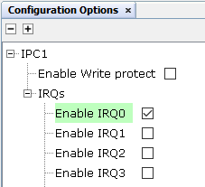
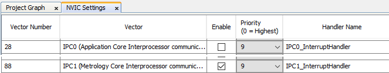
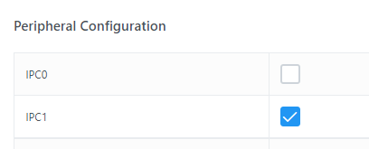

1.3.2.2 Configuring Dual Core Demo Secondary Application
Dual Core Demo Secondary Application Configurations
Dual Core Demo Secondary Application should be configured via MCC. Below is the Snapshot of the MCC configuration window for Dual Core Demo Secondary Application and some important description.
Secondary application has to enable the IPC1 clock and configure the IPC1 peripheral to receive IPC commands from the Main application.

IPC0:
IPC0 is only used to send commands from Secondary core to the Main core, no interrupt handler is required. Therefore IRQs must be disabled.
IPC_IRQ0_MASK signal is used to send command from the Main core to the Secondary core.
Figure . Dual Core Demo IPC0 configuration 
IPC1:
IPC1 Interrupt Handler is responsible for capturing the interrupt signal (IPC_IRQ0_MASK) triggered by the Main Application. Therefore IRQ0 must be enabled.
IPC1 initialization is required.
IPC_IRQ1_MASK signal is used to send command from the Secondary core to the Main core.
Figure . Dual Core Demo IPC1 configuration 
NVIC Settings:
Since only IPC1 interrupt is required, only the IPC1_InterruptHandler must be enabled.
Figure . Dual Core Demo IPC NVIC Settings 
Peripheral Clock:
The Secondary core enables the IPC1 peripheral clock but not IPC0 peripheral clock, which is enabled by the Main core.
Figure . Dual Core Demo IPC Peripheral Clocks 
STDIO:
Secondary application has been designed to use the same console interface than the Main application, which is Flexcom 0 peripheral.
Since Flexcom0 peripheral is also used by the Main application and it has been initialized by the Main application, the Secondary application must not initialize that peripheral.
Comment or remove the Flexcom0 initilization routine from SYS_Initialize function.
Initialization Routine:
Peripherals used by the Main and Secondary application simultaneously must been only initialized and configured by the Main application.
Peripherals used only by the Secondary application must be configured by the Secondary application.
Peripherals included in the subsystem 1 (secondary) must be initialized by the Secondary application due to the recommended programming sequence for powering up the Secondary core.
NVIC Interrupt vector must be configured independently in each application.
void SYS_Initialize ( void* data )
{
/* MISRAC 2012 deviation block start */
/* MISRA C-2012 Rule 2.2 deviated in this file. Deviation record ID - H3_MISRAC_2012_R_2_2_DR_1 */
CLK_Initialize();
PIO_Initialize();
TC2_CH0_TimerInitialize();
// FLEXCOM0_USART_Initialize();
IPC1_Initialize();
sysObj.sysTime = SYS_TIME_Initialize(SYS_TIME_INDEX_0, (SYS_MODULE_INIT *)&sysTimeInitData);
APPCORE1_Initialize();
NVIC_Initialize();
/* MISRAC 2012 deviation block end */
}